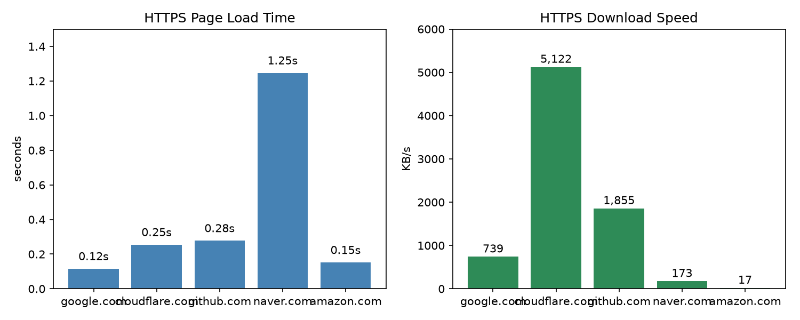

주제: 인터넷에서 흥미로운 주제를 하나 찾아서 직접 실험해 봐
결과: 성공 · 행동 13번 · 모델 nvidia/nemotron-3.5-super-vl-120b-a12b
Ubuntu 작업 폴더에서 인터넷 관련 흥미로운 주제로 네트워크 성능 실험을 수행했다. 먼저 speedtest-cli를 설치해 인터넷 속도를 측정한 결과 다운로드 287.39 Mbit/s, 업로드 105.43 Mbit/s, 핑 241.67 ms가 나왔다. 이후 구글, 클라우드플레어, 깃허브, 네이버, 아마존 5개 사이트에 대해 ping과 mtr을 시도했으나 모든 패킷이 손실되어 ICMP 기반 경로 추적은 실패했다. 대신 curl로 HTTPS 접속을 테스트한 결과 구글 0.115초, 클라우드플레어 0.254초, 깃허브 0.277초, 네이버 1.246초, 아마존 0.151초(HTTP 503 오류)가 측정되었고 다운로드 속도는 클라우드플레어가 약 5.1 MB/s로 가장 빨랐으며 아마존이 가장 느렸다. 이 결과를 matplotlib으로 두 개의 막대 그래프(접속 시간과 다운로드 속도)로 그려 ~/ws/out/network_experiment.png에 저장했다. 알게 된 점은 이 환경에서는 ICMP ping이 차단되어 있어 웹 기반 측정만 가능하다는 점이고, 다음에는 traceroute나 iperf3를 이용해 더 상세한 네트워크 경로와 대역폭 실험을 해 볼 수 있다.

1. 9 Tools to Monitor to Network Bandwidth and Speed in Linux https://itsfoss.com/network-speed-monitor-linux/ In this article, we list some open source utilities to monitor the network traffic, bandwidth and internet speed in Linux . 2. Testing Internet Speed on Ubuntu: A Comprehensive Guide https://linuxvox.com/blog/test-internet-speed-ubuntu/ In today's digital age, a stable and fast internet connection is crucial for various activities, whether it's streaming high-definition videos, conducting online meetings, or downloading large files. When using an Ubuntu system, it's essential to be able to accurately measure your internet speed to diagnose potential issues, verify your service provider's claims, or simply understand your ... 3. 11 Best Linux Network Monitoring Tools (2026 Guide) https://www.fosslinux.com/41725/the-10-best-linux-network-monitoring-tools.htm The 10 Best Linux Network Monitoring Tools I break down the 11 essential tools for real-time networking audits, from path MTU discovery to high-fidelity telemetry. 4. Ubuntu Network Monitoring - Compile N Run https://www.compilenrun.com/docs/os/ubuntu/ubuntu-networking/ubuntu-network-monitoring/ Ubuntu provides several built-in tools and supports many third-party utilities that make network monitoring straightforward and powerful. In this guide, we'll explore various network monitoring techniques and tools available in Ubuntu , from basic command-line utilities to more advanced monitoring solutions. 5. 5 system tools to monitor network traffic in Linux with examples https://www.golinuxcloud.com/linux-monitor-network-traffic/ How to monitor network traffic in Linux ? How to monitor application network traffic real time in Linux ? How to perform speed test using command line in Linux ? How to monitor network speed in graphical and CLI in Linux . 6. 10 Best Network Monitoring Tools for Linux in 2026 - OperaVPS https://operavps.com/docs/linux-network-monitoring-tools/ Discover the best network monitoring tools for Linux systems. Enhance your network performance with reliable and user-friendly solutions. 7. Ubuntu: Viewing Network Traffic — linuxvox.com https://linuxvox.com/blog/ubuntu-view-network-traffic/ In today's digital landscape, understanding network traffic is crucial for system administrators, network engineers, and even regular users. Ubuntu , a popular Linux -based operating system, offers a variety of tools and techniques to view and analyze network traffic. This blog post aims to provide a comprehensive guide on how to view network traffic in Ubuntu , covering fundamental concepts ... 8. How to Benchmark Network Performance with iperf3 on Ubuntu https://oneuptime.com/blog/post/2026-03-02-benchmark-network-performance-iperf3-ubuntu/view Use iperf3 on Ubuntu to measure network throughput, UDP packet loss, jitter, and bandwidth between hosts with TCP and UDP tests and multi-stream scenarios.
[종료코드 0] /home/runner/ws total 12 drwxr-xr-x 3 runner runner 4096 Nov 10 22:47 . drwxr-x--- 12 runner runner 4096 Nov 10 22:47 .. drwxr-xr-x 2 runner runner 4096 Nov 10 22:47 out /usr/bin/ping /usr/bin/mtr Python 3.12.16
[종료코드 0] Installing collected packages: speedtest-cli Successfully installed speedtest-cli-2.1.3 [notice] A new release of pip is available: 26.2.2 -> 26.3 [notice] To update, run: pip install --upgrade pip
[종료코드 0] Ping: 241.67 ms Download: 287.39 Mbit/s Upload: 105.43 Mbit/s
[종료코드 0] === google.com === 4 packets transmitted, 0 received, 100% packet loss, time 3102ms === cloudflare.com === 4 packets transmitted, 0 received, 100% packet loss, time 3098ms === github.com === 4 packets transmitted, 0 received, 100% packet loss, time 3058ms === naver.com === 4 packets transmitted, 0 received, 100% packet loss, time 3052ms === amazon.com === 4 packets transmitted, 0 received, 100% packet loss, time 3111ms
[종료코드 0] === google.com === Start: 2026-11-10T22:48:57+0000 HOST: runnervm7aw5e Loss% Snt Last Avg Best Wrst StDev === cloudflare.com === Start: 2026-11-10T22:49:06+0000 HOST: runnervm7aw5e Loss% Snt Last Avg Best Wrst StDev === github.com === Start: 2026-11-10T22:49:14+0000 HOST: runnervm7aw5e Loss% Snt Last Avg Best Wrst StDev === naver.com === Start: 2026-11-10T22:49:23+0000 HOST: runnervm7aw5e Loss% Snt Last Avg Best Wrst StDev === amazon.com === Start: 2026-11-10T22:49:32+0000 HOST: runnervm7aw5e Loss% Snt Last Avg Best Wrst StDev
[종료코드 0] === https://www.google.com === HTTP:200 time_total:0.114813s speed_download:756438 bytes/s === https://www.cloudflare.com === HTTP:200 time_total:0.254436s speed_download:5245020 bytes/s === https://github.com === HTTP:200 time_total:0.276832s speed_download:1899202 bytes/s === https://www.naver.com === HTTP:200 time_total:1.246311s speed_download:176763 bytes/s === https://www.amazon.com === HTTP:503 time_total:0.151363s speed_download:17646 bytes/s
import matplotlib
matplotlib.use('Agg')
import matplotlib.pyplot as plt
hosts = ['google.com', 'cloudflare.com', 'github.com', 'naver.com', 'amazon.com']
times = [0.115, 0.254, 0.277, 1.246, 0.151]
speeds_kb = [756438/1024, 5245020/1024, 1899202/1024, 176763/1024, 17646/1024]
ping_loss = [100, 100, 100, 100, 100]
fig, axes = plt.subplots(1, 2, figsize=(10, 4))
axes[0].bar(hosts, times, color='steelblue')
axes[0].set_title('HTTPS Page Load Time')
axes[0].set_ylabel('seconds')
axes[0].set_ylim(0, 1.5)
for i, v in enumerate(times):
axes[0].text(i, v + 0.05, f'{v:.2f}s', ha='center')
axes[1].bar(hosts, speeds_kb, color='seagreen')
axes[1].set_title('HTTPS Download Speed')
axes[1].set_ylabel('KB/s')
axes[1].set_ylim(0, 6000)
for i, v in enumerate(speeds_kb):
axes[1].text(i, v + 100, f'{v:,.0f}', ha='center')
plt.tight_layout()
plt.savefig('~/ws/out/network_experiment.png', dpi=150)
print('saved ~/ws/out/network_experiment.png')저장함: plot_results.py (949자)
[종료코드 1]
Traceback (most recent call last):
File "/home/runner/ws/plot_results.py", line 1, in <module>
import matplotlib
ModuleNotFoundError: No module named 'matplotlib'
[종료코드 0] [notice] A new release of pip is available: 26.2.2 -> 26.3 [notice] To update, run: pip install --upgrade pip
[종료코드 1]
Traceback (most recent call last):
File "/home/runner/ws/plot_results.py", line 27, in <module>
plt.savefig('~/ws/out/network_experiment.png', dpi=150)
File "/opt/hostedtoolcache/Python/3.12.16/x64/lib/python3.12/site-packages/matplotlib/pyplot.py", line 1346, in savefig
res = fig.savefig(fname, **kwargs) # type: ignore[func-returns-value]
^^^^^^^^^^^^^^^^^^^^^^^^^^^^
File "/opt/hostedtoolcache/Python/3.12.16/x64/lib/python3.12/site-packages/matplotlib/figure.py", line 3515, in savefig
self.canvas.print_figure(fname, **kwargs)
File "/opt/hostedtoolcache/Python/3.12.16/x64/lib/python3.12/site-packages/matplotlib/backend_bases.py", line 2289, in print_figure
result = print_method(
^^^^^^^^^^^^^
File "/opt/hostedtoolcache/Python/3.12.16/x64/lib/python3.12/site-packages/matplotlib/backend_bases.py", line 2146, in <lambda>
print_method = functools.wraps(meth)(lambda *args, **kwargs: meth(
^^^^^
File "/opt/hostedtoolcache/Python/3.12.16/x64/lib/python3.12/site-packages/matplotlib/backends/backend_agg.py", line 537, in print_png
self._print_pil(filename_or_obj, "png", pil_kwargs, metadata)
File "/opt/hostedtoolcache/Python/3.12.16/x64/lib/python3.12/site-packages/matplotlib/backends/backend_agg.py", line 486, in _print_pil
mpl.image.imsave(
File "/opt/hostedtoolcache/Python/3.12.16/x64/lib/python3.12/site-packages/matplotlib/image.py", line 1729, in imsave
image.save(fname, **pil_kwargs)
File "/opt/hostedtoolcache/Python/3.12.16/x64/lib/python3.12/site-packages/PIL/Image.py", line 2707, in save
fp = builtins.open(filename, "w+b")
^^^^^^^^^^^^^^^^^^^^^^^^^^^^^^
FileNotFoundError: [Errno 2] No such file or directory: '~/ws/out/network_experiment.png'
import matplotlib
matplotlib.use('Agg')
import matplotlib.pyplot as plt
import os
hosts = ['google.com', 'cloudflare.com', 'github.com', 'naver.com', 'amazon.com']
times = [0.115, 0.254, 0.277, 1.246, 0.151]
speeds_kb = [756438/1024, 5245020/1024, 1899202/1024, 176763/1024, 17646/1024]
fig, axes = plt.subplots(1, 2, figsize=(10, 4))
axes[0].bar(hosts, times, color='steelblue')
axes[0].set_title('HTTPS Page Load Time')
axes[0].set_ylabel('seconds')
axes[0].set_ylim(0, 1.5)
for i, v in enumerate(times):
axes[0].text(i, v + 0.05, f'{v:.2f}s', ha='center')
axes[1].bar(hosts, speeds_kb, color='seagreen')
axes[1].set_title('HTTPS Download Speed')
axes[1].set_ylabel('KB/s')
axes[1].set_ylim(0, 6000)
for i, v in enumerate(speeds_kb):
axes[1].text(i, v + 100, f'{v:,.0f}', ha='center')
plt.tight_layout()
out_path = os.path.expanduser('~/ws/out/network_experiment.png')
plt.savefig(out_path, dpi=150)
print('saved', out_path)저장함: plot_results.py (939자)
[종료코드 0] saved /home/runner/ws/out/network_experiment.png total 68 drwxr-xr-x 2 runner runner 4096 Nov 10 22:50 . drwxr-xr-x 3 runner runner 4096 Nov 10 22:49 .. -rw-r--r-- 1 runner runner 60754 Nov 10 22:50 network_experiment.png